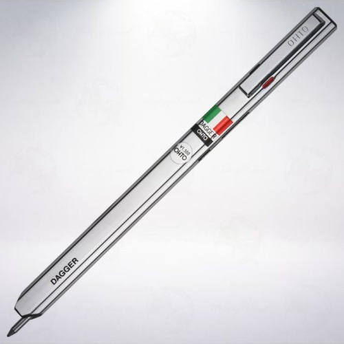
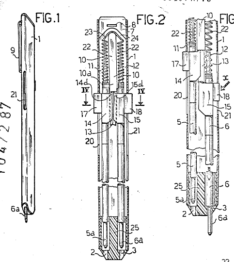

OHTO DAGGER
Two color ballpoint pen
Stand: 24.05.2026
Der in Japan von OHTO hergestellte Zweifarbenkugelschreiber "DAGGER" trägt einen Aufkleber mit der italienischen Flagge.
Viele wundern sich, was der Grund für diesen Aufkleber sein könnte. Ich gehe davon aus, dass es sich auf das Herkunftsland des Erfinders bezieht.
Silvano Dolfi war ein italienischer Erfinder aus Settimo Torinese, der 1975 das Patent IT1047287 anmeldete (ebenfalls IT1070601, IT1033021), welches dem OHTO DAGGER zugrundeliegt.
Das Besondere am DAGGER ist seine flache Form und die zwei nebeneinanderliegenden Schreiböffnungen jeweils für eine der Minen, statt dass wie gewöhnlich beide Minen aus derselben Schreiböffnung hervorgeschoben werden.
Diese Anordnung hat er mit dem bolascrip 2-farb-Kugelschreiber gemeinsam.


Es ist ein simpler Kunststoff-Snapfit-Rastmechanismus, wie den meisten Menschen der BIC 4 color bekannt ist.
Der Schieber rastet in einer Freilassung innerhalb des Stifts ein, und wird durch den anderen bei dessem Herunterschieben aus dieser herausgedrückt und von der Zugfeder wieder nach oben gezogen.
Eine lange Zugfeder verbindet die beiden Minen, statt eine Feder für jede Mine zu nutzen. Das Verbinden von zwei Minen mit einer Feder war möglicherweise einfacher/kostensparender, unter anderem weil die Feder keine Aufhängung braucht.
Diese Bauweise kam erstmals um diese Zeit auf und wird heute noch in günstigen Vierfarbstiften praktiziert.
Auch eine 3-farbige Version mit dreieckigem Querschnitt und eine 4-farbige Version mit sechseckigem Querschnitt war Teil seiner Erfindung.
Der Stift findet sich außerhalb Japans unter 'ELITE'. Es handelte sich also sicher nur um eine Lizenzvergabe an OHTO.